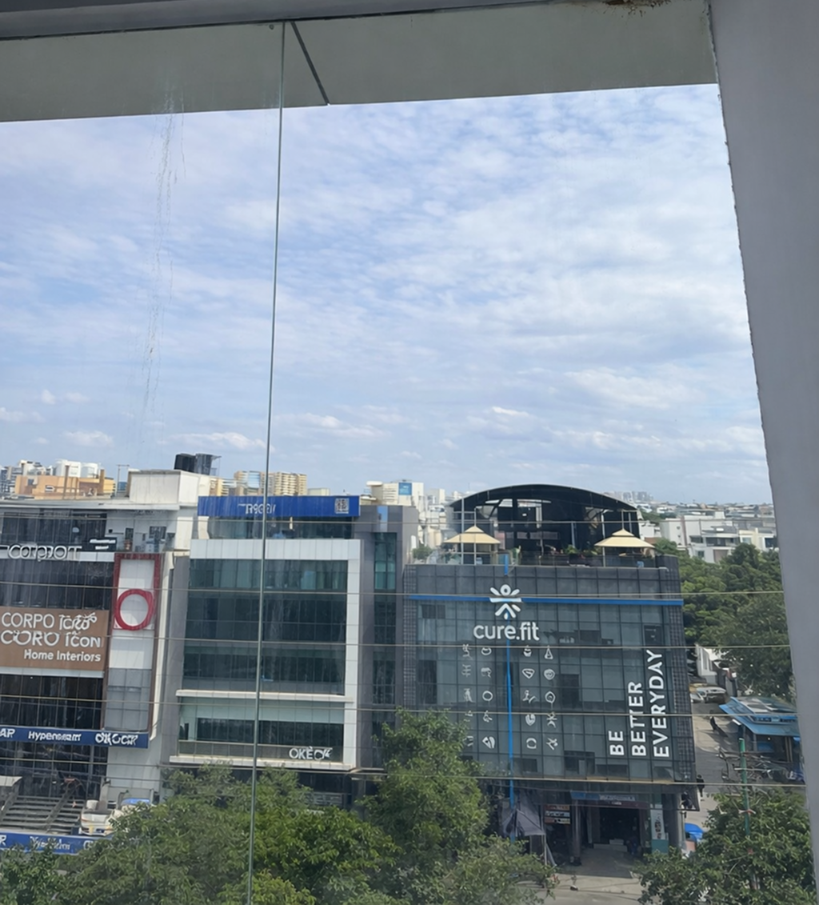

Commercial Glass Restoration · Bangalore
Restore Before
You Replace
Glass still looks stained after cleaning? Cleaning cannot remove bonded mineral deposits. CLEAR360 removes hard water stains and mineral deposits from commercial glass facades in Bangalore — no replacement needed.


No filters
No editing
Same lighting
Actual test patch
Scroll